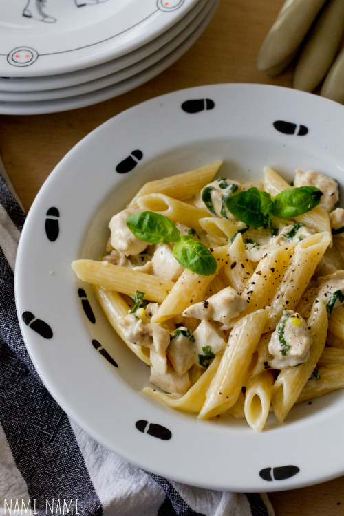

Koorene kanapasta retsept
Koostisosad

- 400 g makarone (penne, fusilli)
- 500 g kanafileed või kintsuliha
- 2 sl õli
- 2 küüslauguküünt
- soola ja musta pipart
- 4 dl 35% rõõska koort ehk vahukoort
- 100 g riivitud Parmesani või muud kõvemat juustu
- peotäis hakitud värsket basiilikut või peterselli
Valmistamine
- Lõika kana rinnafilee või kintsuliha väikesteks tükkideks või peenikesteks ribadeks. Haki küüslauk.
Riivi vajadusel juust. Haki basiilik või rebi basiilikulehed väiksemateks tükkideks.
- Kuumuta suures potis vesi keemiseni, et saaks sinna hiljem makaronid lisada.
- Kuumuta suurel paksupõhjalisel praepannil õli keskmisel kuumusel.
Lisa jaokaupa kanatükid (kõike korraga lisades jahtub pann liialt maha) ning
prae segades, kuni kanatükid on kenasti jumekad.
- Maitsesta soola-pipraga, siis lisa pannile küüslauk ja prae veel minut aega.
- Nüüd kalla pannile rõõsk koor, sega läbi, alanda kuumust ja jäta kaste podisema.
(Kui kasutad kuivatatud basiilikut, siis lisa see ka nüüd).
- Keeda makaronid samal ajal al dente.
Kui makaronid on valmis, siis kurna ja lisa kohe kana-koorekastme hulka, lisa ka juust ja basiilik.
Sega õrnalt läbi, lase veel mõned minutid haududa ja serveeri.
- Serveerimisel puista peale veel värsket peterselli ja riivitud juustu, soovi korral jahvata veskist veidi musta pipart ka juurde.